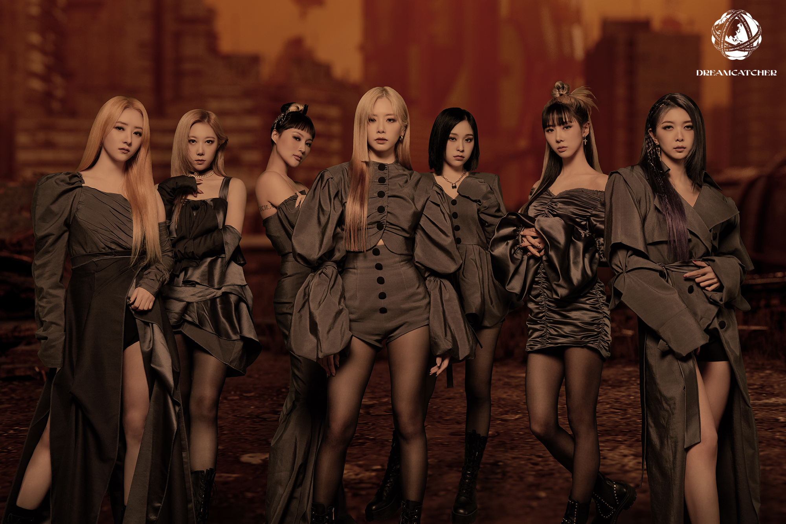
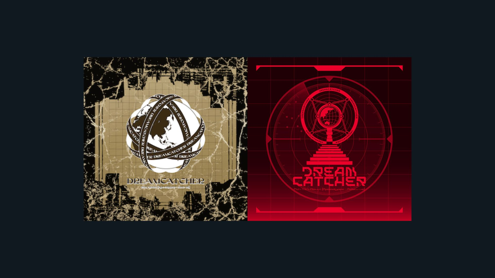
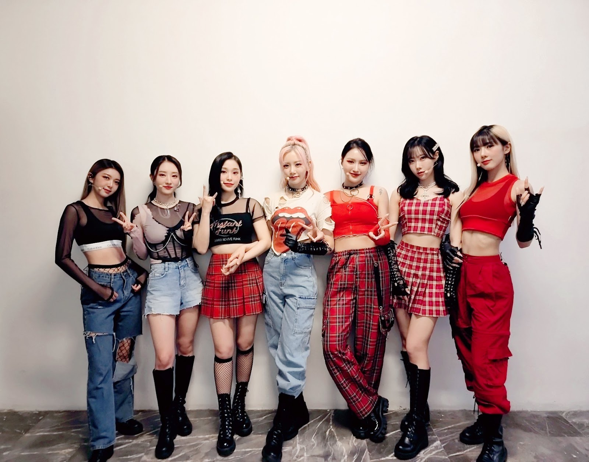
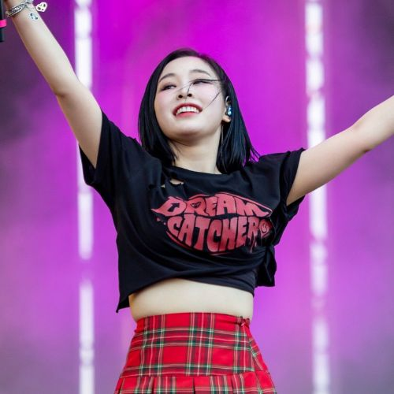

Dreamcatcher

Dreamcatcher es un grupo femenino surcoreano de K-Pop y Rock formado por Happy Face Entertainment. Está integrado por siete miembros: Jiu, Sua, Siyeon, Handong, Yoohyeon, Dami y Gahyeon. Debutaron oficialmente el 13 de enero de 2017 con el álbum sencillo Nightmare.
El grupo se distingue por ser de los pocos grupos femeninos de K-Pop que incluyen géneros músicales como Heavy Metal, Nu Metal, EDM, R&B y Synth Pop, además de tener un estilo oscuro, tetrico y fuerte.
Inicios
Dreamcatcher se formó originalmente bajo el nombre de MINX, y constaba de cinco miembros: Jiu, Sua, Siyeon, Yoohyeon y Dami. Lanzaron su sencillo debut titulado "Why Did You Come to My Home?" el 18 de septiembre de 2014. En julio de 2015 con el EP "Love Shake", que sería su último lanzamiento como MINX. El grupo se caracterizaba por tener un estilo feliz, femenino y colorido de género Pop con influencias del Hip-Hop.
En noviembre de 2016, anunciaron que redebutarían en 2017 bajo el nuevo nombre de Dreamcatcher, con la incorporación de dos nuevos miembros, Handong y Gahyeon.
Redebut como Dreamcatcher
El grupo volvió a debutar con el lanzamiento de su primer álbum sencillo Nightmare y su tema principal "Chase Me", el 13 de enero de 2017.
El 5 de abril, Dreamcatcher lanzó su segundo álbum sencillo titulado Fall Asleep in the Mirror, con su tema principal "Good Night". Dreamcatcher lanzó su primer EP bajo su nuevo nombre titulado Prequel el 27 de julio de 2017. El álbum contenía seis pistas, incluido el sencillo principal "Fly High".
Dreamcatcher fue incluido en el puesto número 3 en los mejores nuevos actos de k-Pop de Billboard en 2017, además de recibir buenas criticas de diferentes parte del mundo sobre su sonido único que incorpora el Rock y Heavy Metal
Discografía
Álbums y Mini Álbums
The Nightmare Series
The Nightmare Series es una serie en donde incluye su álbum sencillo debut y demás álbums:
Álbum sencillo debut: Nightmare(2017)
Segundo álbum sencillo Nightmare:Fall Asleep in the Mirror(2017)
Primer mini álbum Nightmare:Prequel (2017)
Segundo mini álbum Nightmare:Escape the Era (2018)
Tercer mini álbum Nightmare:Alone in the City (2018)
Cuarto mini álbum The End of Nightmare (2019)
Primer álbum japonés The Beginning of the End (2019)
Mini álbum especial Raid of Dream (2019)
La historia esta conformada por los sencillos de cada uno de estos:
"Chase Me"
"Good Night"
"Fly High"
"You and I"
"What"
"Breaking Out"
"Deja Vu"
Dystopia Trilogy
Dystopia Trilogy es una trilogía donde se incluyen:
Primer álbum Dystopia:The Tree of Language (2020)
Quinto mini álbum Dystopia:Lose Myself (2020)
Sexto mini álbum Dystopia:Road to Utopia (2021)
La trilogía esta conformada por los tres sencillos de cada uno de estos:
Scream
BOCA
Odd Eye
Una de las integrantes, Handong, no fue parte de The Tree of Lenguage y Lose Myself ya que se econtraba en China y debido a la pandemia del 2020 no pudo regresar a Corea del Sur hasta el 2021 y reincorporarse al grupo en Road to Utopia
Después de esta trilogía sacaron su segundo mini álbum especial Summer Holiday(2021) con el sencillo BEcause.
Apocalypse Series
Apocalypse Series es su actual serie que esta conformada por:
Segundo álbum Apocalypse:Save Us (2022)
Apocalypse: Follow Us (2022)

Apocalypse Series esta conformada por los sencillos:
Maison
Vision
Miembros

El grupo esta formado por 7 miembros: Jiu, Sua, Siyeon, Handong, Yoohyeon, Dami y Gahyeon.
Jiu
Kim Minji (1994, Daejeon, Corea del Sur) conocida por su nombre artistico, Jiu, es la lider, vocalista y bailarina del grupo. Fue miembro del anterior grupo, MINX. Es la mayor de las 7.
Tiene un solo en el álbum de Apocalypse:Save Us, "Cherry"
Sua
Kim Bora (1994, Changwon, Corea del Sur) conocida por su nombre artistico, Sua, es la bailarina principal y vocalista del grupo. Fue miembro del anterior grupo MINX.
Tiene un solo en el álbum de Apocalypse:Save Us, "No Dot"
Siyeon
Lee Siyeon (1995, Daegu, Corea del Sur) o simplemente Siyeon, es la vocalista principal y bailarina del grupo. Fue miembro del anterior grupo MINX.
Tiene un solo en el álbum de Apocalypse:Save Us, "Entrancing" y un sencillo digital, "Paradise"
Handong

Handong, (1996, Wuhan, China) siendo la unica integrante china, es la vocalista y bailarina del grupo. Se unio al grupo en el 2017 cuando redebutaron como Dreamcatcher.
En el 2019 se ausento del grupo para ir a China a participar en un programa musical, perdiendose una gira por Europa y el primer álbum "Dystopia:The Tree of Lenguage". Durante el 2020 no pudo regresar a Corea del Sur debido a la pandemia del COVID-19, perdiendose tambien el quinto mini álbum, "Dystopia:Lose Myself". El 16 de Octubre del 2021 Handong regresaro a Corea del Sur, reincorporandose con el grupo y las actividades.
Tiene un solo en el álbum de Apocalypse:Save Us, "Winter" un sencillo digita chino, "First Light of Dawn"
Yoohyeon
Kim Yoohyeon (1997, Incheon, Corea del Sur) o solamente Yoohyeon, es vocalista, bailarina del grupo. Fue miembro del anterior grupo MINX.
Tiene un solo en ingles en el álbum de Apocalypse:Save Us, "For"
Dami
Lee Yubin (1997, Seúl, Corea del Sur) conocida por su nombre artistico, Dami, es la rapera principal, vocalista y bailarina del grupo. Fue miembro del anterior grupo MINX.
Tiene un solo en el álbum de Apocalypse:Save Us, "Beauty Full"
Gahyeon

Lee Gahyeon (1999, Seongnam, Corea del Sur) o solo Gahyeon, es la rapera secundaria, vocalista y bailarina del grupo, Se unio al grupo en el 2017 cuando redebutaron como Dreamcatcher. Es la menor de las 7.
Tiene un solo en el álbum de Apocalypse:Save Us, "Playground"